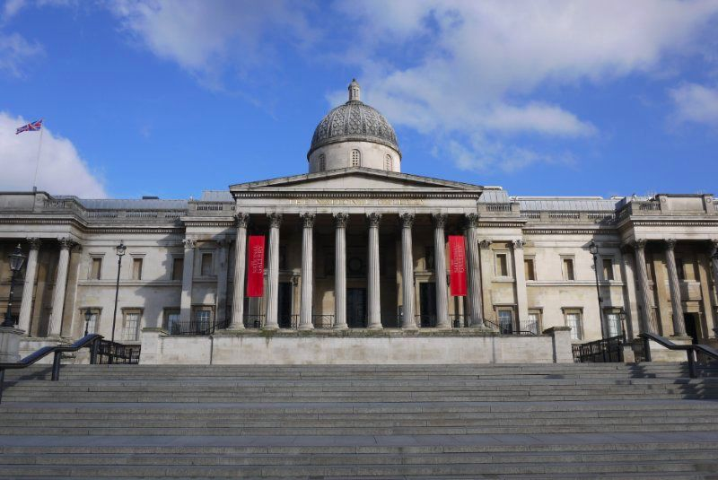
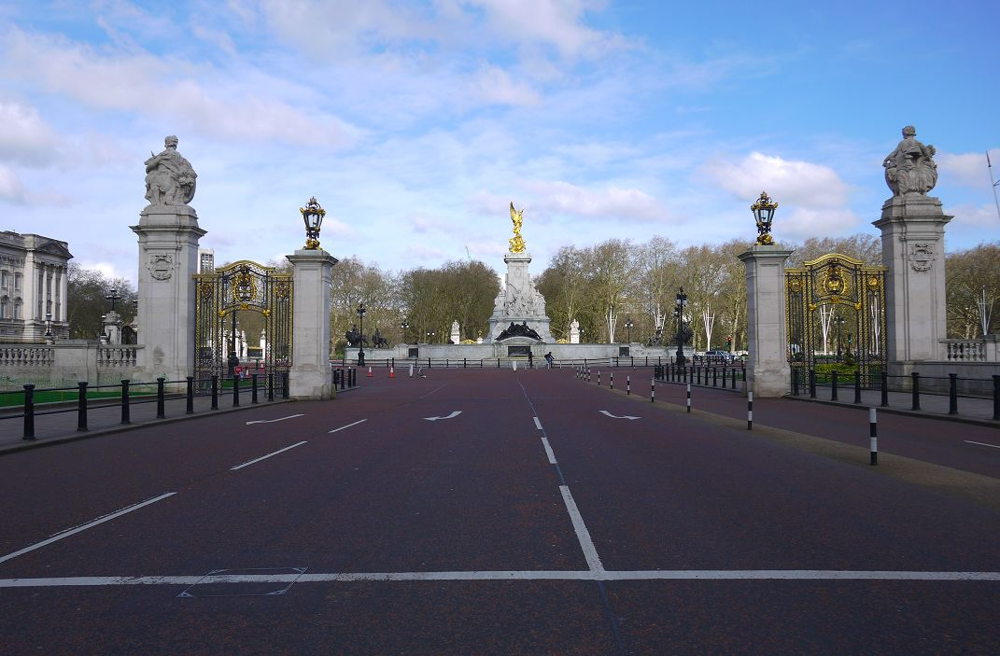
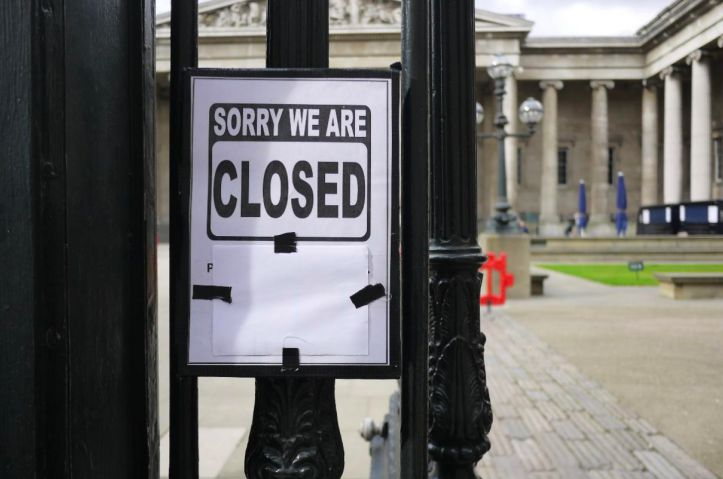

直击英国缓疫策略：9天进入“拖延期”，ICU严重不足，暂不检测轻症患者
原文链接 备份链接 作为现代公共卫生的起源地，英国应对新冠肺炎疫情的机制备受关注。但随着疫情的蔓延，英国的防疫策略也是最受争议的 2020年3月19日，在英国英格兰北部约克市中心，两名妇女在相邻的公园长椅隔空聊天。图/法新 文 |《财经》 …

作为现代公共卫生的起源地，英国应对新冠肺炎疫情的机制备受关注。但随着疫情的蔓延，英国的防疫策略也是最受争议的。
本文 6481字，阅读全文约9分钟

2020年3月19日，在英国英格兰北部约克市中心，两名妇女在相邻的公园长椅隔空聊天。图/法新
文/《财经》记者 江玮 发自伦敦 编辑/郝洲
中小学停课，暂未停课的大学则改为线上授课，餐馆、酒吧歇业，超市限购，大英博物馆无限期关门，西区剧院停摆，70岁以上老年人被建议自我隔离3个月……2020年3月中旬以来，新冠肺炎疫情正在改变英国。
虽然伦敦街头戴口罩的人依然是少数，但超市里的卫生纸、消毒洗手液、意大利面和罐头食品近来常被抢购一空。在空荡荡的货架上，一家超市贴出“买前三思”的提示。早些时候，“保持冷静，勤洗手（Keep Calm and Wash Your Hands）”这句标语出现在伦敦女王陛下剧院的卫生间里。自从新冠肺炎疫情暴发以来，英国首相鲍里斯·约翰逊提醒民众最多的一句话就是勤洗手，甚至还在电视上演示了如何唱完两遍生日快乐歌才结束洗手。
作为现代公共卫生的起源地，英国应对新冠肺炎疫情的机制备受关注。但随着疫情的蔓延，英国的防疫策略也是最受争议的。
出自英国政府首席科学顾问帕特里克·瓦伦斯之口的“群体免疫”在批评者看来是不负责任和无所作为，尽管英国卫生大臣马特·汉考克后来澄清说，群体免疫从来就不是英国的政策或者目标。他强调：“我们的目标是保护生命，我们的政策是和病毒战斗，保护脆弱人群和国家医疗服务体系（NHS）。”
自从3月12日宣布进入防疫工作的第二阶段以来，英国政府采取的措施不断调整并逐步加码，从认为关闭学校弊大于利到几天后宣布中小学停课；从认为没有必要取消大型活动到呼吁民众保持社交距离。3月20日（周五）傍晚，约翰逊更进一步宣布从当晚关闭所有餐馆、咖啡馆、酒吧、电影院、健身房等场所，而周五晚上通常是酒吧最热闹的时候。
约翰逊政府采取的举措正逐渐向其他欧洲国家靠拢，但英国还未封锁国境或者城市，进出伦敦的交通虽然因客流减少而缩减，但并未切断。截至当地时间3月21日，英国共5018人确诊感染新冠病毒，死亡病例达233例。

图说：伦敦的一家超市提醒大家不要抢购（摄影：江玮）
从围堵到拖延
英国首次出现新冠肺炎确诊病例是在2020年1月31日，患者为约克大学的一名中国留学生和她的亲属，两人之前刚从中国抵达英国。由于当时感染人群集中在武汉，英国的举措仅限于加强对从武汉进入英国旅客的检查。在武汉封城后，英国对过去14天从武汉抵达英国的乘客进行追踪，呼吁他们主动联系国家医疗服务体系接受新冠病毒测试。
2月6日，一名来自布莱顿的英国商人史蒂夫·沃尔什确诊新冠肺炎。他在新加坡开会期间被感染，但由于没有意识到自己已被感染，离开新加坡后，他又前往法国阿尔卑斯山的一家滑雪场待了四天，由此造成至少11人感染。尽管沃尔什和被他感染的人后来都治愈出院，但确诊病例仍在英国各地零星出现。到2月底，英国的感染人数为23人。进入3月之后，确诊病例数量开始急速增长。
3月3日，英国政府发布应对新冠肺炎的行动计划，将英国的防疫工作分为四个阶段：防堵、拖延、研究和减损。在公布行动方案时，英国仍处于防堵的第一阶段，即希望通过发现早期病例和密切接触者来阻止病毒在英国的进一步传播。但只过了9天，英国政府就宣布防疫工作进入拖延阶段，即希望病毒放缓传播速度，减少高峰期影响。此时，英国已发现596例确诊病例，10人死亡。
在宣布进入防疫工作第二阶段时，首相约翰逊宣布的主要举措是建议出现发烧或者咳嗽症状的人进行自我隔离，学校取消海外旅行，超过70岁或者健康状况有问题的人不要乘坐邮轮。与当时已经进入全国封锁状态的意大利和宣布学校停课的法国相比，英国政府的决策受到应对不力的质疑。
进入拖延阶段的另一项新政策是不再对轻症患者进行检测，只是要求他们在家里自我隔离。欧洲另一个国家瑞士也采取了类似的决定，但这与世界卫生组织的建议背道而驰。世卫组织认为对每一个疑似病例进行检测才更好地阻止社区传播。
尝试对所有疑似病例进行检测是欧洲国家中疫情最严重的意大利正在采取的举措。“很不幸，其他国家的确诊人数正在上升，他们试图调整措施，但延迟就是一种失误，尤其在看到意大利所经历的一切之后。意大利自己也浪费了很多宝贵时间，尽管它目睹了中国经历的一切，这些都是以生命为代价的。”曾经在中国工作多年后来回到意大利政府就职的米凯莱·杰拉奇对《财经》记者表示，他此前担任意大利经济发展部副部长。
世卫组织前助理总干事、伦敦卫生与热带医学院流行病学教授大卫·海曼对《财经》记者表示，检测是重要的，因为通过检测可以知道疾病在哪里发生，然后做出反应。但他同时表示，每个国家是根据自身能力和风险评估做出该如何应对的判断。
面对检测能力不足的批评，英国政府在3月17日表示将在未来四周内把每日检测能力提升至2.5万。
为了更好地向英国民众说明政府采取的行动，约翰逊从3月16日起每天在伦敦唐宁街10号首相官邸召开新闻发布会。他在过去几天的发布会上宣布了更多举措，包括呼吁国民减少不必要的接触和旅行，尽可能在家工作，从建议民众不要去餐馆、酒吧、剧院到最后宣布关闭这些场所。尽管英国政府尚未像法国那样对违反封锁令的人进行罚款，但有望于下周在议会通过的新冠病毒紧急法案将赋予政府更多权限对违反规定者实施处罚。
民间的行动比政府更快一步。在政府要求关闭博物馆和美术馆的前两天，英国主要博物馆和美术馆已经纷纷在3月17日宣布将从次日起关门。

3月21日，英国国家美术馆已经关闭 摄影/江玮


3月21日，白金汉宫前的广场已空无一人（摄影：江玮）
3月18日，大英博物馆一改往日的熙熙攘攘，大门口贴着关门的告示。在大英博物馆对面的一家纪念品商店，一名店员在百无聊赖地整理原本已经非常整齐的货架。他对《财经》记者表示：“完全没有生意。”从早上九点到下午两点，他只接待了一名顾客。

图说：关门以后的大英博物馆（摄影：江玮）

图说：大英博物馆门口的告示写着：“对不起！关门了！”（摄影：江玮）
为了缓解疫情对于经济的影响，英国财政大臣里希·苏纳克3月17日宣布将提供3300亿英镑的贷款担保，并通过减税、补助和其他手段来减轻疫情对企业的影响。3月20日，英国政府更是采取前所未有的举动，决定由政府向因受疫情影响无法开工的企业支付员工80%的工资，上限为每月2500英镑。这一政策将实施3个月，若有需要还会延长。如此形式的政府干预在英国史无前例，若非疫情，对于保守党政府更是一个难以想象的决策。
基于科学的不同观点
英国有应对传染病的丰富经验。公共卫生医学的开拓者约翰·斯诺正是来自英国，他在19世纪对伦敦苏活区霍乱疫情的研究被认为是流行病学研究的先驱。
英国政府在应对新冠疫情的行动计划中列出了过去100多年英国应对流行病的经历，其中包括1918-1919年的西班牙大流感、1957-1958年的亚洲流感、1989-1990年的季节性流感、2002-2003年的非典、2009-2010年的甲型H1N1流感和2012年的中东呼吸综合征。英国政府在这份行动计划里称，英国应对过大规模的传染病暴发，对此有充分的准备。“我们的行动方案定期接受检验，并根据地方和国家情况进行有针对性的更新，这为有效应对新冠肺炎打下了基础。”
海曼在政府行动计划公布前接受《财经》记者采访时曾提到英国面对疫情有非常坚实的策略：遏制、延迟和研究。这与后来英国政府宣布的四阶段行动计划几乎不谋而合。海曼曾于2012年至2017年担任英格兰公共卫生署主席，这一机构与美国疾病控制与预防中心(CDC)职能相似。
“每个国家做出的回应都是根据风险评估做出的。英国政府也是如此，先试图遏制病毒的蔓延，现在则采用了新的战略。”海曼说。
自从新冠肺炎疫情暴发以来，首相约翰逊已经召开了六次代号为“眼镜蛇”的紧急内阁会议。第一次发生在3月2日，英国政府随后公开了对新冠肺炎的行动计划。第二次在3月9日，当时做出的决定是维持英国处于防疫行动第一阶段的状态。3月12日，约翰逊在第三次“眼镜蛇”会议后宣布英国进入防疫第二阶段。3月16日、18日和20日，他又分别主持了三次紧急会议。
“眼镜蛇”是由内阁简报室首字母缩写组成的代号。这一紧急会议在国家面临危机时启动，参加会议的成员包括高级政府官员、安全和情报官员、军方和由危机性质决定的相关部门负责人。
面对质疑，约翰逊强调政府决策是基于科学证据。英国政府首席医学顾问和首席科学顾问在此次应对新冠肺炎的政策制定中发挥了重要作用。目前担任政府首席医疗顾问的是克里斯·惠蒂，他也是英格兰地区首席医疗官。这位来自伦敦卫生与热带医学院的教授是一名流行病学家，此前曾参与过英国政府应对埃博拉疫情的行动。
首席科学顾问则是英国政府紧急事件科学顾问小组 (SAGE)的主席，目前担任这一职务的瓦伦斯曾经是伦敦大学学院医学院院长，也在企业担任过研发部门负责人。紧急事件科学顾问小组的作用是为英国政府决策提供及时的科学建议，其成员构成依紧急事件的性质而定。
英国政府认为，如果新冠病毒继续蔓延，他们将无法阻止多数人被感染，因此科学家的使命是如何放缓这一过程，减少感染人群的数量，将感染峰值尽量往后推迟，以免NHS不堪负荷。他们利用数学模型来理解疾病的传播方式，其中帝国理工学院和伦敦敦卫生与热带医学院的建模结果在很大程度上为政府决策提供了依据。
根据伦敦的帝国理工学院3月16日发布的一份报告，缓解和抑制是控制疫情的两种基本策略，前者是减缓但不一定彻底阻止流行病的传播，其重点在于降低对医疗需求的峰值，保护高风险人群免受感染；后者则希望扭转疫情增长局面，减少病例并使之维持在低的水平。
英国最初决定采用缓解策略，其中的措施包括疑似病例居家隔离，老年人自我隔离等。但帝国理工的建模显示，这仍然可能导致数十万人死亡。抑制策略则需要结合整体人口的社会隔离，再辅以关闭学校。英国政府在过去一周宣布的政策开始更多采纳抑制策略所需举措，希望通过不同的干预措施来减少病毒的传播途径。
一个由行为心理学顾问组成的团队也参与了英国政府的决策。 他们提出的“行为疲劳”理论使得政府在最初决定暂缓更严厉措施的出台。这一理论认为，如果太早采取限制，会导致人们对政策产生疲劳，等到疫情进入高峰时，人们已经开始松懈。
英国牛津大学流行病学教授陈铮鸣在接受《财经》记者专访时表示，英国政府在防疫第二阶段推出的政策是逐步的，早期举措蜻蜓点水，但更大力度的措施在计划之中，只是希望找到更好的时机来宣布，从而使其发挥最大的效果。在过去几天，英国政府的做法某种程度上印证了这一观点。
但数百名英国行为科学家对英国政府的做法存疑。他们在上周发布的一封公开信中指出，对于行为疲劳这一理论在多大程度上适用于当前疫情的特殊情况，人们的认识还不够，由此推断的结论也不能令人信服。公开信还表示，对行为疲劳的担心使得政府认为遏制病毒传播是不可能的，只能是放缓传播进程，直到达成群体免疫。“但激进的行为改变能达到的效果可以比这更好。如果成功的话，能挽救大批人的生命。中国和韩国的经验都已经充分表明了这种可能性，至少我们应该尝试一下。”
“群体免疫”在经首席科学顾问瓦伦斯提出之后受到诸多质疑。瓦伦斯在接受英国媒体采访时表示，由于大部分新冠病毒感染人群呈现为轻症，他们在病愈后可以产生某种群体免疫；大约60%的英国人口在感染得到治愈后才能实现群体免疫。这一理论经不同角度的解读引起诸多争议。英国免疫协会也持保留态度，并向政府发表了一封公开信。信中指出，群体免疫的策略只有在脆弱人群得到保护的情况下才能发挥作用，否则后果严重。此外，对新冠病毒仍存在未知的地方，人们并不知道它是否会对已感染人群产生长期的免疫力，因此预防感染才是更谨慎的做法。
“有不同声音是很正常的，政府需要决定听取哪一方的意见。”海曼说，“这是一个全新的病毒，我们也不知道结果会是什么。我们会看到一些成功的策略，也会看到一些策略失败。”

图说：伦敦大学图书馆因为新冠病毒关门的通知（摄影：江玮）
NHS如何应对
新冠肺炎疫情使得NHS如临大敌，尤其英国仍处于冬季流感高发期。NHS为英国民众提供免费医疗，但长期面临医疗资源紧张和医护人员短缺的压力。
为了避免造成更多人感染，NHS的第一道防线全科医生（GP）从3月初就发出通知，要求出现疑似症状的病人不要去社区诊所，而是应该拨打NHS电话111求助。在英国看病原本需要先和全科医生预约，到诊所就诊，然后由全科医生决定是否应该去医院接受进一步检查和治疗。但这一流程并不适用于新冠病人。
最初英国指定了30家医院接受新冠肺炎病人。这些医院均设有传染病房，可以对病人进行隔离。直到3月初，大部分确诊病人都在英格兰地区的五家医院接受治疗，其中两家位于伦敦，另外三家分别在利物浦、谢菲尔德和纽卡斯尔。在第一批指定的30家医院满员之后，更多医院将开始接受新冠病人。随着感染人数的不断上升，一些医院开始取消常规治疗，为新冠肺炎患者留出床位。
帝国理工3月16日发布的报告中预计，在入院接受治疗的新冠肺炎患者中，大约30%的人需要进重症监护病房（ICU）。在新冠肺炎死亡率最高的国家意大利，其每10万人的ICU床位数为12.5，已经高于欧洲平均水平的11.5，但一些医生仍面临究竟让哪位病人进重症监护室的艰难抉择。
英国拥有的ICU数量处于欧洲平均线以下。统计数字显示，英国人均ICU的水平在31个欧洲国家中排在24位。即使在没有新冠肺炎疫情的情况下，英国的重症监护病房大多已被占用。
根据NHS在今年3月公布的数据，英格兰地区的ICU共有4123个，苏格兰地区为275个，威尔士153个，北爱尔兰88个。而截至2020年1月，英格兰地区的ICU已经有超过五分之四的床位被占用。
对于新冠肺炎的重症患者，呼吸机和ECMO（人工肺）是维持生命的重要设备。但英国所有医院一共只配备了5000台呼吸机，ECMO的数量更是有限，目前只有伦敦、剑桥、曼彻斯特和莱斯特的五家医院提供。英国政府希望能够尽快增加额外2万台呼吸机，卫生大臣汉考克16日在推特上呼吁能够生产呼吸机的制造商提供支持。
和医疗资源紧张同时存在的问题还有医护人员保护措施的匮乏。英国总工会近日向政府提出了五项主要诉求，其中包括为医护人员优先提供护目镜、温度计、口罩、消毒洗手液等。
一位在伦敦附近城市工作的NHS工作人员丹尼·麦考德莫特对《财经》记者表示，现在急救和非急救医护人员都面临口罩供应短缺的问题；很多救护车驾驶员没有口罩，只能寄希望于车里的病人只是感冒咳嗽，没有感染新冠病毒。“我们连基本的口罩都缺乏，就像是没有枪去上战场。”他所在的医院最近一直在试图腾出更多床位为新冠疫情更大规模的暴发做准备。
一些医护人员正在呼吁，对出现疑似症状的NHS员工优先进行检测。按照英国目前的政策，即使是医护人员出现疑似新冠肺炎的迹象，如果是轻症也无法接受检测。一位接受BBC采访的医护人员表示自己在出现一些症状后正在自我隔离。“NHS已经不堪重负。如果对我们进行检测，结果显示没有感染，我们就可以在两三天后回到工作岗位，而不是要等14天。”
对麦考德莫特而言，让他担心的还有另一件事情：人们对即将到来的暴风雨不以为意，以为发生在其他国家的事情不会在自己身上发生，在囤积食物的同时却又无视保持社交距离的建议。
（《财经》实习生张丹对此文亦有贡献）
【版权声明】本作品著作权归《财经》独家所有，授权深圳市腾讯计算机系统有限公司独家享有信息网络传播权，任何第三方未经授权，不得转载。

系列报道
◤活粒为《财经》杂志 科技与健康团队 的新媒体项目，坚持独立、独家、独到，合作／爆料请联系：yingxin@caijing.com.cn◢

《财经》旗下健康领域深度报道专栏
扫一扫：

原文链接 备份链接 作为现代公共卫生的起源地，英国应对新冠肺炎疫情的机制备受关注。但随着疫情的蔓延，英国的防疫策略也是最受争议的 2020年3月19日，在英国英格兰北部约克市中心，两名妇女在相邻的公园长椅隔空聊天。图/法新 文 |《财经》 …
原文链接 备份链接 图片来源：Needplx 记者：肖恩 “ “根据英国政府和全球科学家制作的模型，未来10至14周英国确诊病例将迅速增加，在5月底至6月中旬达到顶峰。” ” 提出备受争议的“群体免疫”思路仅四天之后，又倏然拉高全国防疫政 …
原文链接 备份链接 英国准备了更多举措，但这些措施在什么时候实施才能达到最大效果，是英国政府的重要考量，尽管这导致了英国的对策看起来暂时让外人难以理解 本文 6854字，阅读全文约10分钟 文 |《财经》记者 江玮 发自伦敦 编辑 | 郝 …
原文链接 备份链接 很多网友吐槽“英式抗疫”，大多源于对国情、文化、民众心理以及医疗体系的不理解。 “群体免疫”在世界各地炸了锅后，英国卫生大臣马修·汉考克回应：大众对“群体免疫”断章取义了，这不是英国政府的目标或者政策，这是一个科 …
原文链接 备份链接 实习记者 | 文思敏 编辑 | 倪 妮 眼下，居住在英国苏格兰首府爱丁堡的Naomi感到很无助。 Naomi来自中国台湾，在英国已经居住了近七年，丈夫James则是苏格兰本地人。从3月7日起，James开始出现咳嗽、 …